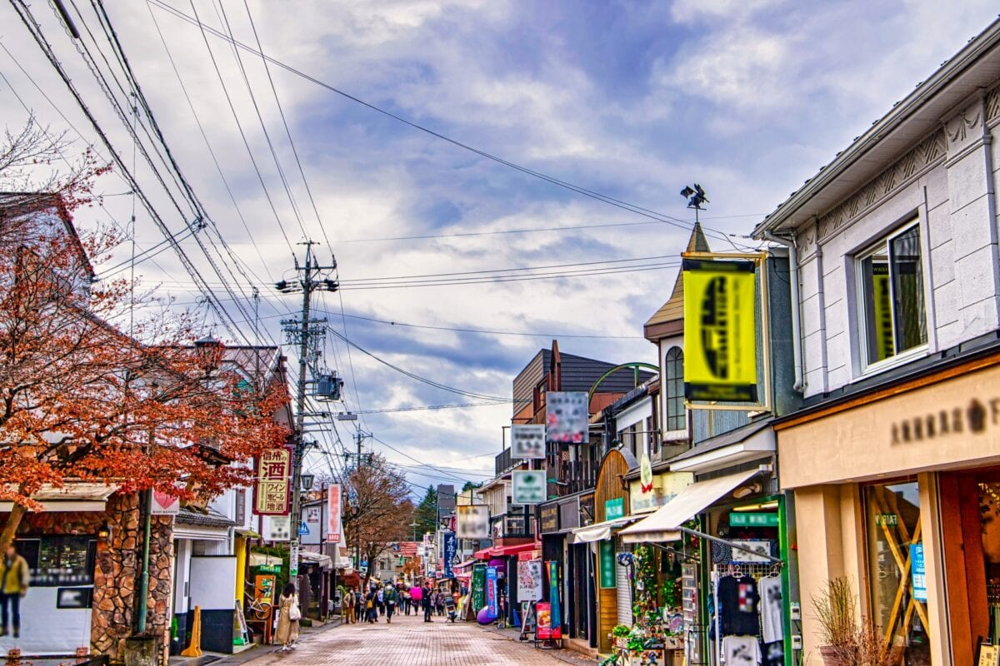
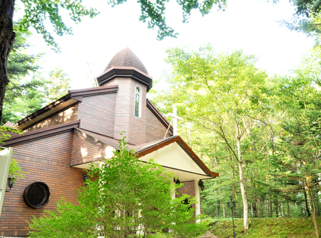
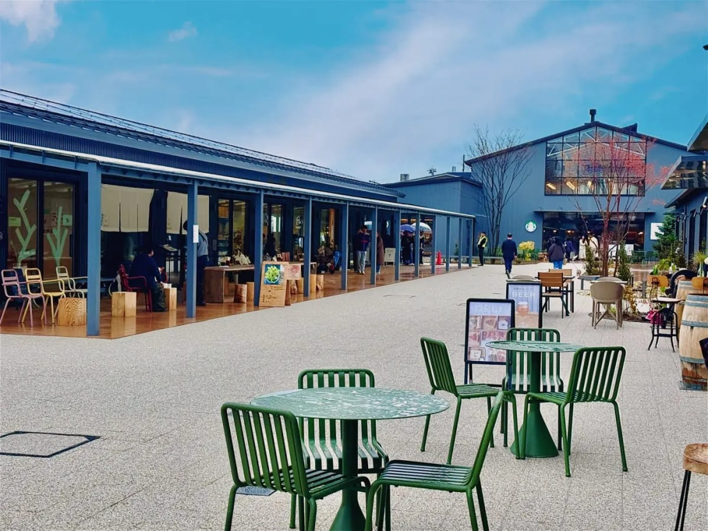
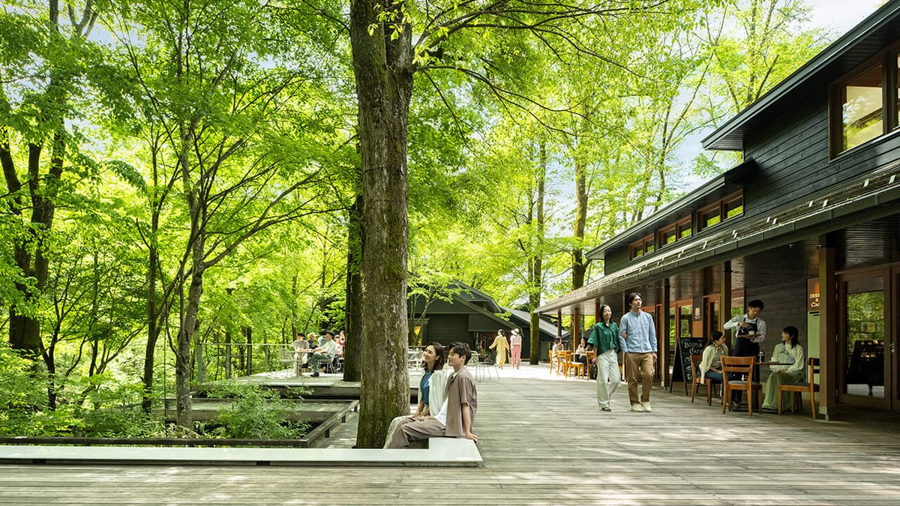
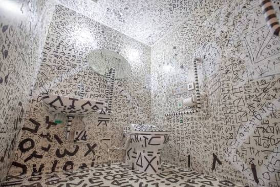
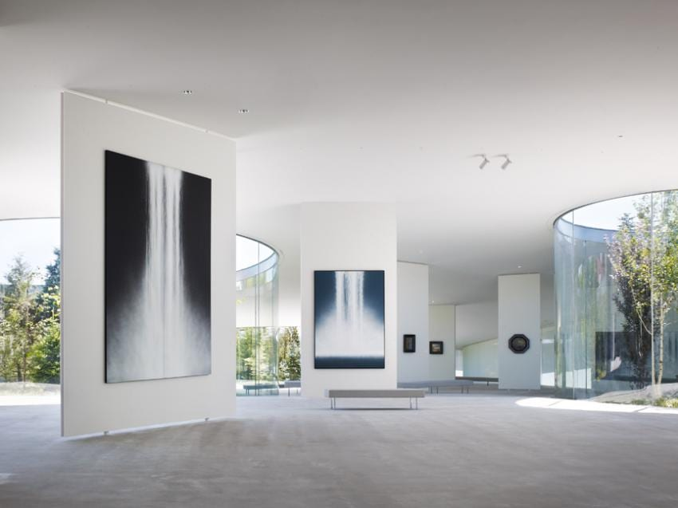

旧軽井沢銀座の写真
images/spot-kyukaru.jpg
旧軽井沢銀座
パン屋やジャム屋、カフェが並ぶ通り。朝のうちは人も少なく、ゆっくり歩けます。
営業時間店により異なります（多くは 10:00 – 18:00 頃）

Wedding Invitation
2026 . 10 . 16
本藤 周作 ・ 本藤 ちひろ
矢ケ崎チャペル ／ 軽井沢
このたび私たちは、軽井沢の小さな教会で結婚式を挙げることになりました。
遠方からお越しいただくことになりますが、 軽井沢で家族と過ごす一日を、一緒に楽しんでいただけたら嬉しいです。
当日のスケジュール・会場・宿泊のご案内をまとめました。 当日はこのページを開いてご確認ください。
二〇二六年 初秋
周作 ・ ちひろ
挙式は 16:00 開始で、17:30 までに終わります。
ホテル チェックイン
チェックインは 15:00 から。この時間を目安にお越しください。
お部屋でお支度を整えていただけます。
チャペル前に集合
チャペルの前に直接お集まりください。
新婦側両親はリハーサルがあるため、15:30 にチャペルにお越しください。
挙式Ceremony
所要 約30分。
写真撮影・ご歓談
チャペルとその周辺で、家族の集合写真を撮ります。
挙式終了
お食事まで少し時間があります。お部屋でひと休みください。
お食事会
トラットリア クレアッタ にて食事会を開きます。ホテルからタクシーで向かいます。
解散・お部屋へ
翌朝は朝食が出ます。
お部屋でごゆっくりお休みください。
矢ケ崎チャペル ── 林のなかに建つ、独立したチャペルです。
images/chapel-exterior.jpg
15時からチェックインが可能です。
ホテル到着後、チェックインを済ませ、お部屋でお支度をお願いします。
images/hotel.jpg
軽井沢駅と旧軽井沢銀座商店街の間に位置するホテルで、軽井沢駅 北口から徒歩10分です。
ホテルの無料送迎もあります（9:00〜18:00／北口に着いたらホテルへお電話ください）。
式のあとは、みんなで夕食を囲みます。
グランディスタイル 旧軽井沢 ホテル&リゾートの1階にあるイタリアン「TRATTORIA CREATTA」にお越しください。
images/dinner.jpg
参列してくださるみなさまをご紹介します。
女性はワンピースやパーティードレスなど、男性はスーツやジャケットスタイルなどでお越しください。
挙式後の食事会も、同じ服装でお過ごしいただけます。
10月中旬の軽井沢は、日中でも 15℃ 前後。朝晩は 5℃ を下回る日もあります。
あたたかい服装でお越しください。
翌朝は自由行動です。ホテルの周りと、少し足をのばしたところから、いくつかご紹介します。
images/spot-kyukaru.jpg
パン屋やジャム屋、カフェが並ぶ通り。朝のうちは人も少なく、ゆっくり歩けます。
営業時間店により異なります（多くは 10:00 – 18:00 頃）
images/spot-tsite.jpg
蔦屋書店を中心にした複合施設。本を眺めながらコーヒーを飲める、雨の日にも向いた場所です。
営業時間8:00 – 22:00（店舗により異なります）
images/spot-prince.jpg駅の目の前に広がるアウトレット。帰りの電車までの時間にも寄りやすい場所です。
営業時間10:00 – 19:00（10月／無休）
images/spot-harunire.jpg
川沿いの木立のなかに、カフェやベーカリーが点在する一角。少し足をのばすならこちらへ。
営業時間ショップ 10:00 – 18:00 ／ レストラン 11:00 – 22:00（店舗により異なります）
images/spot-newart.jpg
現代美術を紹介する美術館。駅から旧軽井沢銀座へ向かう通り沿いにあります。
営業時間10:00 – 17:00（最終入館 16:30）／ 月曜休み
images/spot-senju.jpg
日本画家・千住博の作品を集めた美術館。ゆるやかに傾斜した床と、庭に面した明るい展示室が特徴です。
営業時間9:30 – 17:00（最終入館 16:30）／ 火曜休み
所要時間・営業時間はいずれも目安です。季節によって変わるため、おでかけ前に各施設のご確認をおすすめします。